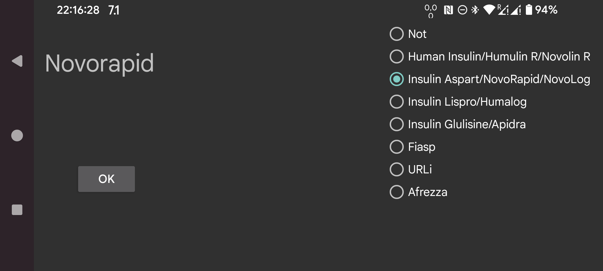
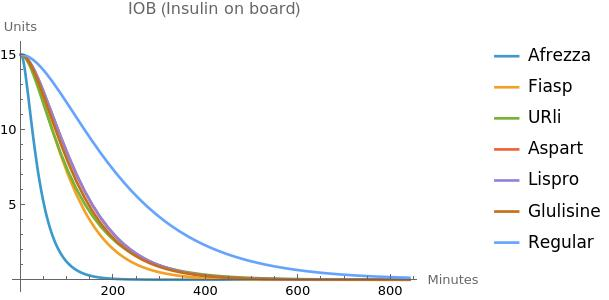

Der IOB gibt an, wie viel Insulin von vorherigen Insulingaben übrig bleibt. Vor Juggluco 9.2.0 wurde die Blutinsulinkonzentrationskurve von Insulin Aspart zur Schätzung des IOB verwendet. Jetzt können Sie die Insulinart angeben, und Juggluco verwendet eine für diese Insulinart spezifische Blutinsulinkonzentrationskurve. Geben Sie „Nicht“ an , wenn die Bezeichnung nicht für schnell wirkendes Insulin steht, andernfalls geben Sie die Insulinart an. Zur Auswahl stehen:
Human Insulin/Humulin R/Novolin R
Insulin Aspart/NovoRapid/NovoLog
Insulin Lispro/Humalog
Insulin Glulisin/Apidra
Fiasp
URLs
Afrezza
Wie die IOB-Formeln berechnet werden, wird auf der folgenden Website beschrieben: https://www.juggluco.nl/Juggluco/IOB/overview.html
Wenn Sie einen schnell wirkenden Insulintyp kennen, der nicht erwähnt ist, können Sie mir eine E-Mail senden.